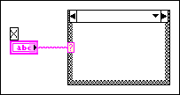

You have created the case of a Case structure but did not give that case a selector value. The case with a missing selector value might not be the visible case.
To correct this error, move through the cases to find the case that does not have a selector value. Use the Labeling tool to click the case selector label and enter a value. The value must be compatible with the data type of the selector terminal. For example, if the selector terminal is a string, you should enter a string value. If the selector terminal is an integer, enter an integer value, and so on. Enter quotation marks around a value to indicate that the value is a string.